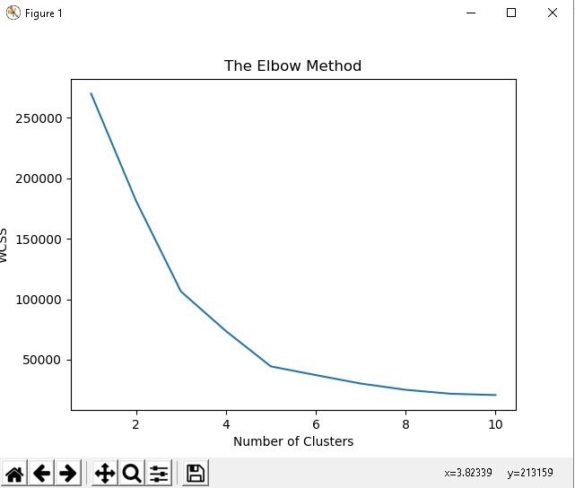
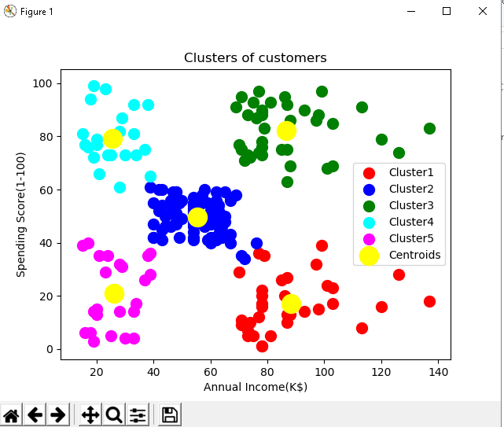

K Means Clustering
K-means merupakan salah satu algoritma clustering . Tujuan algoritma ini yaitu untuk membagi data menjadi beberapa kelompok. Algoritma ini menerima masukan berupa data tanpa label kelas. Hal ini berbeda dengan supervised learning yang menerima masukan berupa vektor (x1 , y1) , (x2 , y2) , …, (xi , yi), di mana xi merupakan data dari suatu data pelatihan dan yi merupakan label kelas untuk xi .
Pada algoritma pembelajaran ini, komputer mengelompokkan sendiri data-data yang menjadi masukannya tanpa mengetahui terlebih dulu target kelasnya. Pembelajaran ini termasuk dalam unsupervised learning. Masukan yang diterima adalah data atau objek dan k buah kelompok (cluster) yang diinginkan. Algoritma ini akan mengelompokkan data atau objek ke dalam k buah kelompok tersebut. Pada setiap cluster terdapat titik pusat (centroid) yang merepresentasikan cluster tersebut.
K-means ditemukan oleh beberapa orang yaitu Lloyd (1957, 1982), Forgey (1965) , Friedman and Rubin (1967) , and McQueen (1967) . Ide dari clustering pertama kali ditemukan oleh Lloyd pada tahun 1957, namun hal tersebut baru dipublikasi pada tahun 1982. Pada tahun 1965, Forgey juga mempublikasi teknik yang sama sehingga terkadang dikenal sebagai Lloyd-Forgy pada beberapa sumber.
Kelebihan dan Kekurangan
kelebihan pada algoritma k-means
-
Mudah untuk diimplementasikan dan dijalankan.
-
Waktu yang dibutuhkan untuk menjalankan pembelajaran ini relatif cepat.
-
Umum digunakan.
kekurangan
-
Sebelum algoritma dijalankan, k buah titik diinisialisasi secara random sehingga pengelompokkan data yang dihasilkan dapat berbeda-beda . Jika nilai random untuk inisialisasi kurang baik, maka pengelompokkan yang dihasilkan pun menjadi kurang optimal.
-
Jika hanya terdapat beberapa titik sampel data, maka cukup mudah untuk menghitung dan mencari titik terdekat dengan k titik yang diinisialisasi secara random. Namun jika terdapat banyak sekali titik data (misalnya satu milyar buah data), maka perhitungan dan pencarian titik terdekat akan membutuhkan waktu yang lama. Proses tersebut dapat dipercepat, namun dibutuhkan struktur data yang lebih rumit seperti kD-Tree atau hashing.
Wikipedia-
Study Kasus
Data yang digunakan pada kali ini adalah data yang diperoleh dari www.kaggle.com yaitu Mall_Costomer.csv.
Step 1, Import package
dengan menggunakan python 3.7
library yang diperlukan :
import numpy as np
import pandas as pd
import matplotlib.pyplot as plt
Step 2 , Read data
dataset=pd.read_csv('Customers.csv')
X=dataset.iloc[:,[3,4]].values
Step 3, Elbow Method
#Using the elbow method to find the optimal number of clusters
from sklearn.cluster import KMeans
wcss=[]
for i in range(1,11):
kmeans=KMeans(n_clusters=i, init='k-means++',random_state=0)
kmeans.fit(X)
wcss.append(kmeans.inertia_)
plt.plot(range(1,11),wcss)
plt.title('The Elbow Method')
plt.xlabel('Number of Clusters')
plt.ylabel('WCSS')
plt.show()

Step 4, Penyesuaian Data
#Fitting K-MEans to the dataset
kmeans=KMeans(n_clusters=5,init='k-means++',random_state=0)
y_kmeans=kmeans.fit_predict(X)
Step 5, Visualisai
#Visualize the clusters
plt.scatter(X[y_kmeans==0,0],X[y_kmeans==0,1],s=100,c='red',label='Cluster1')
plt.scatter(X[y_kmeans==1,0],X[y_kmeans==1,1],s=100,c='blue',label='Cluster2')
plt.scatter(X[y_kmeans==2,0],X[y_kmeans==2,1],s=100,c='green',label='Cluster3')
plt.scatter(X[y_kmeans==3,0],X[y_kmeans==3,1],s=100,c='cyan',label='Cluster4')
plt.scatter(X[y_kmeans==4,0],X[y_kmeans==4,1],s=100,c='magenta',label='Cluster5')
plt.scatter(kmeans.cluster_centers_[:,0],kmeans.cluster_centers_[:,1],s=300,c='yellow',label='Centroids')
plt.title('Clusters of customers')
plt.xlabel('Annual Income(K$)')
plt.ylabel('Spending Score(1-100)')
plt.legend()
plt.show()

Conclusion
Kmeans clustering adalah salah satu algoritma pengelompokan paling populer dan biasanya hal pertama yang diterapkan para praktisi ketika menyelesaikan tugas-tugas pengelompokan untuk mendapatkan gambaran tentang struktur dataset. Tujuan kmeans adalah untuk mengelompokkan titik data ke dalam subkelompok yang tidak tumpang tindih. Itu melakukan pekerjaan yang sangat baik ketika cluster memiliki semacam bentuk bola. Namun, kmean juga tidak mempelajari jumlah cluster dari data dan mengharuskannya untuk ditentukan sebelumnya. Untuk menjadi praktisi yang baik, ada baiknya untuk mengetahui asumsi di balik algoritma / metode sehingga kita akan memiliki ide yang cukup bagus tentang kekuatan dan kelemahan masing-masing metode.
References
Lecture Slides and Files | Introduction to Computational Thinking and Data Science | Electrical… (https://ocw.mit.edu/courses/electrical-engineering-and-computer-science/6-0002-introduction-to-computational-thinking-and-data-science-fall-2016/lecture-slides-and-files/)
K-Means Algorithm - Stanford University | Coursera (https://www.coursera.org/learn/machine-learning/lecture/93VPG/k-means-algorithm)
K-mean Clustering Algorithm (https://towardsdatascience.com/k-means-clustering-algorithm-applications-evaluation-methods-and-drawbacks-aa03e644b48a)